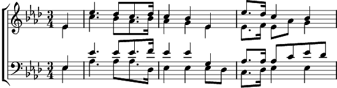

Là-haut sur la montagne2. Là-haut sur la montagne
Croula le vieux chalet. (bis)
La neige et les rochers
S'étaient unis pour l'arracher.
Là-haut sur la montagne
Croula le vieux chalet.
3. Là-haut sur la montagne
Quand Jean vint au chalet. (bis)
Pleura de tout son cœur
Sur les débris de son bonheur.
Là-haut sur la montagne
Quand Jean vint au chalet.
4. Là-haut sur la montagne
L'est un nouveau chalet. (bis)
Car Jean, d'un cœur vaillant
L'a reconstruit plus beau qu'avant.
Là-haut sur la montagne
L'est un nouveau chalet.